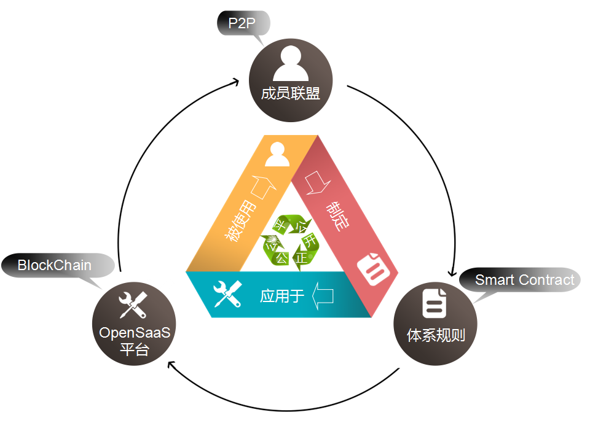

SaaS平台之殇
背景
商业应用的集中式托管可以追溯到20世纪60年代的时分系统中。SaaS通常使用多租架构为多个商业组织和用户提供服务。
在多租环境中的相对低廉的用户服务开通（创建新客户），使得一些软件即服务供应商可以用免费模式来提供应用。在这种模式下，基本功能免费，增强功能或更大的范围则是要收费的。当然，也有完全对用户完全免费的SaaS，而他们的收入则产生于其它相关来源例如：广告。
SaaS的本质是将规模经济应用到软件应用的运营上。故其规模决定了其发展。而影响企业用户决定是否采用SaaS的一个最关键因素就是数据。
殇 - 问题
数据的安全，以及数据的归属（政策法规上的搜索/占有保障法律并不保护服务存储的数据）。最终导致结果是，对数据的访问，以及进一步的对该数据的不当使用，仅仅由假定是诚信的第三方或他们自己的承诺书来限制（你没法知道他们到底是否违背了他们的承诺）。
- 数据安全
- 数据实际属于SaaS服务提供商
- 服务终止
- 数据滥用:
- 供应商工作/研发人员可以任意浏览/修改数据。
- 代码漏洞或后门
- 数据丢失或篡改
- Clearpace Software Ltd. 发起的研究显示85%的参与者想要获得他们的软件即服务数据的一个副本。
1/3的这些参与者想要每天获取一份副本。
- Clearpace Software Ltd. 发起的研究显示85%的参与者想要获得他们的软件即服务数据的一个副本。
- 供应商破产
- 用户无知情权，监督权，数据归属权
愚以上为制约SaaS发展规模的主要原因。
开源 SaaS 平台
借助开源 SaaS 平台联盟，借助最新的技术手段，借助开源社区的监督和研发，可以做到：
- 无后门
- 更安全
- 更大程度限制运营人员
- 保障用户的知情权，监督权，数据归属权
- 规模集约化运营
